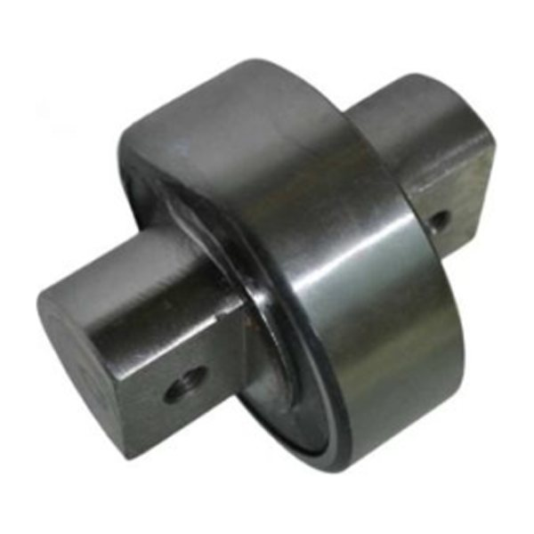

Parts › Mast & Upright › 34344-401

Available
Email for a quote
Komatsu 34344-401 Side Roller
| OEM part number | 34344-401 |
| Fits | Komatsu |
| Models / notes | FD35/40-7/8 |
| Category | Mast & Upright |
| Type | Aftermarket replacement |
Send us the quantity you need and we'll reply with pricing, usually within 24 hours. Not the exact part? We can source it. Send the part number or a photo.